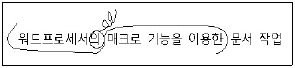
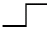
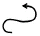
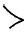
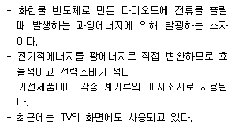

워드프로세서-2급(폐지) (2010-05-16 기출문제)
1과목: 워드프로세서 용어 및 기능
1. 다음 중에서 마우스를 대신하여 사용할 수 있는 입력장치와 그에 대한 설명으로 잘못된 것은?
- 터치 패드 : 감압식 또는 정전식 패드 위에 손가락을 움직여서 마우스 포인터를 이동시키는 방식
- 트랙볼 : 볼 마우스를 뒤집어 놓은 형태로 볼을 돌려서 마우스 포인터를 이동시키는 방식
- 포인팅 스틱 : 키보드 사이에 위치한 스틱을 움직여서마우스 포인터를 이동시키는 방식
- 라이트 펜 : 화면에 나타난 문자나 아이콘을 손가락을 이용하여 마우스 포인터를 이동시키는 방식
(정답률: 84%)

2. 다음 중 공문서에서 "끝" 을 표시하는 방법으로 옳은 것은?
- 본문이 끝나면 다음 줄 맨 앞에 "끝" 표시를 한다.
- 첨부물이 있을 때에는 첨부의 표시문 다음 줄에서 한 칸을 띄우고 "끝" 표시를 하여야 한다.
- 표 서식에서 기재 사항 마지막까지 채워진 경우 표 밖의 다음 줄 왼쪽 시작 위치에서 한 자(2칸)를 띄우고 "끝" 표시를 한다.
- 기재 사항이 서식의 중간에서 끝나는 경우 기재 사항 마지막 다음 칸에 "끝" 표시를 한다.
(정답률: 72%)
3. 다음 중 워드프로세서의 치환(찾아 바꾸기) 기능으로 할 수 없는 것은?
- 탭 기호를 문단 끝 기호로 바꾸기
- 영문 대ㆍ소문자를 구별하여 바꾸기
- 수식을 다른 수식으로 바꾸기
- 영문자를 한자로 바꾸기
(정답률: 71%)
4. 다음 중 컴퓨터 등 정보처리 능력을 가진 장치에 의하여 전자적인 형태로 작성하여 송수신하거나 저장된 문서를 무엇이라고 하는가?
- 공문서
- 사문서
- 전자 문서
- 보관 문서
(정답률: 90%)
5. 다음 중 워드프로세서의 편집 기능 중 영역에 대한 설명으로 옳지 않은 것은?
- 문서의 특정한 부분만 명령을 적용시키기 위하여 범위를 지정하는 것을 영역 또는 블록(Block) 지정이라고 말한다.
- 영역 지정한 범위만을 대상으로 복사, 이동, 검색 및 치환 등을 할 수 있다.
- 지정된 영역을 복사한 경우 내용은 버퍼에 저장되어 다른 곳에 여러 번 붙여넣기할 수 있다.
- 지정된 영역을 삭제하면 지정된 영역의 오른쪽에 있던 내용이 삭제된 만큼 왼쪽으로 채워지므로 문서의 분량은 변화가 없다.
(정답률: 79%)
6. 다음 중 하이퍼텍스트(Hypertext) 기능에 대한 설명으로 옳지 않은 것은?
- 문서와 문서가 순차적인 구조를 가지고 있어서 관련된 내용을 차례대로 참조하는 기능이다.
- 하이퍼텍스트에서 다른 문서간의 연결을 링크(Link)라고 한다.
- 링크를 이용하면 하나의 문서를 보다가 내용 중의 특정 부분과 관련된 다른 부분을 쉽게 참조할 수 있다.
- 이를 이용한 대표적인 것으로 Windows의 도움말이나 인터넷 웹페이지가 있다.
(정답률: 60%)
7. 다음 중 커서 및 화면의 이동에 대한 설명으로 옳지 않은 것은?
- [↑], [↓] 키를 이용하면 한 줄 단위로 커서가 이동하게 된다.
- 마우스로 스크롤 바를 이동하여 커서를 움직일 수 있다.
- [Page Up], [Page Down] 키를 이용하면 한 페이지 또는 화면 단위로 커서가 이동하게 된다.
- 휠마우스의 휠을 사용하여 화면을 이동할 수 있다.
(정답률: 69%)
8. 다음 중 새로운 내용을 입력하면 입력하는 내용만큼 원래의 내용이 지워지면서 다른 내용이 입력되는 상태를 말하며 겹쳐 쓰기라고도 하는 기능은?
- 삽입
- 수정
- 편집
- 삭제
(정답률: 85%)
9. 다음 중 반복적인 작업을 쉽게 처리하기 위해서 사용하는 기능들로만 짝지어진 것은?
- 매크로, 주석
- 다단, 색인
- 상용구, 매크로
- 개체 삽입, 메일 머지
(정답률: 86%)
10. 다음 중 글자 모양에 대한 설명으로 옳지 않은 것은 ?
- 장평을 조정해도 글자의 높이는 변하지 않는다.
- 자간은 글자와 글자 사이의 간격을 말한다.
- 글자의 속성은 서로 혼합하여 사용할 수 있다.
- 전각 문자란 문자의 가로 : 세로 비율이 1 : 1/2 을 말한다.
(정답률: 75%)
11. 다음 중 탭 기능에 대한 설명으로 옳지 않은 것은?
- 커서를 지정된 열의 위치로 바로 이동시키기 위해 사용한다.
- 여러 개의 문단에 동일한 탭 설정을 위해서는 영역을 지정한다.
- 탭 설정에는 왼쪽 탭, 오른쪽 탭, 양쪽배분 탭 등이 있다.
- 탭 간격은 사용자가 임의로 변경할 수 있다.
(정답률: 61%)
12. 다음 중 인쇄장치의 인쇄속도 단위는 어느 것인가?
- MIPS
- PPM
- Margin
- EDI
(정답률: 85%)
13. 다음 중 워드프로세서의 편집 기능과 관련이 없는 것은?
- 영문균등(Justification)
- 워드 랩(Word Wrap)
- 가운데 정렬(Centering)
- 하드 카피(Hard Copy)
(정답률: 79%)
14. 다음 중 문서 편집에 관한 여러 정보를 알려주는 상태표시줄에 나타나는 내용이 아닌 것은?
- 삽입/수정 모드 상태
- 현재 커서의 위치를 알려주는 행과 열의 값
- 편집하고 있는 문서의 이름
- 편집되고 있는 쪽(페이지) 번호
(정답률: 64%)
15. 다음 중 행두 금칙문자로만 짝지어진 것은?
- $, ], ?, "
- ), }, ℉, ?
- (, #, ℃, {
- >, }, ￥, ]
(정답률: 84%)
16. 다음 한글 코드에 관한 설명으로 옳지 않은 것은?
- 유니코드는 조합형과 완성형의 장점을 수용한 코드이다.
- 조합형 코드는 한글의 초성, 중성, 종성을 조합하여 문자를 표현한 것이다.
- 완성형 코드는 정보교환 시 충돌이 발생하지 않아 정보 교환용으로 사용된다.
- 완성형 코드는 옛 고어 등을 표현하는 데 적합하여 국문학에 주로 이용된다.
(정답률: 71%)
17. 다음 중 공문서 작성 시 본문에 포함되지 않는 것은?
- 내용
- 행정기관명
- 제목
- 붙임
(정답률: 75%)
18. 다음 중 워드프로세서 용어에 관한 설명으로 옳은 것은?
- 저장(Save) : 보조기억장치에 저장된 데이터를 주기억장치로 불러들이는 기능
- 디폴트(Default) : 메뉴나 서식 설정을 할 때 이미 설정되어 있는 기본값
- 클립아트(Clip Art) : 각각의 응용프로그램에서 생성한 자료를 다른 프로그램에서 사용하는 기능
- 캡션(Caption) : 문서를 편집하는 도중에 본문의 위치를 표시해 두었다가 커서의 위치를 표시해 둔 곳으로 곧바로 이동시키는 기능
(정답률: 58%)
19. 다음 보기의 교정부호에 대하여 올바르게 교정된 결과는 어느 것인가?

- 워드프로세서의 매크로 기능을 이용한 문서 작업
- 매크로 기능을 이용한 워드프로세서의 문서 작업
- 매크로 기능을 이용한 워드프로세서 문서 작업
- 워드프로세서 매크로 기능을 이용한 문서 작업
(정답률: 92%)
20. 다음 중 줄(행) 단위의 이동이 발생하는 것과 가장 관련이 적은 교정기호는?



(정답률: 83%)
2과목: PC 운영 체제
21. 다음 중 한글 Windows XP의 바탕 화면에서 시스템을 종료 하기 위하여 [시스템 종료] 대화 상자를 호출하는 바로가기 키로 옳은 것은?
- [Ctrl]+[Esc]
- [Ctrl]+[F1]
- [Alt]+[F4]
- [Alt]+[Esc]
(정답률: 82%)
22. 다음 중 한글 Windows XP에서 디스크 공간을 확보하기 위한 방법으로 옳지 않은 것은?
- 사용하지 않은 프로그램을 삭제한다.
- [휴지통]에 들어 있는 내용들을 삭제한다.
- [디스크 조각 모음] 프로그램을 실행하여 디스크의 단편화를 제거한다.
- 디스크의 등록정보 창에서 [압축 사용]을 선택하여 여유공간을 증가시킨다.
(정답률: 66%)
23. 다음 중 한글 Windows XP의 폴더 창에 있는 특정 파일의 이름 바꾸기를 하는 방법으로 옳지 않은 것은?
- 해당 파일을 선택한 후에 폴더창의 [파일] 메뉴의 [이름 바꾸기]를 선택하여 변경한다.
- 해당 파일의 등록정보 창에서 [이름 바꾸기]를 선택하여 변경한다.
- 해당 파일을 선택한 후 파일의 바로가기 메뉴에서 [이름 바꾸기]를 선택하여 변경한다.
- 해당 파일을 선택한 후에 [F2] 키를 눌러서 변경한다.
(정답률: 58%)
24. 다음 중 한글 Windows XP에서 새로운 네트워크 설정을 위하여 [네트워크 설정 마법사]를 실행하는 과정에 포함되는 작업으로 옳지 않은 것은?
- 컴퓨터 이름 설정
- 작업 그룹의 설정
- 파일 및 프린터 공유 설정
- 인터넷 브라우저의 선택
(정답률: 62%)
25. 다음 중 한글 Windows XP의 [보조프로그램]에 있는 [그림판]에 관한 설명으로 옳지 않은 것은?
- 이미지를 다른 형식의 그림 파일로 변환할 수 있다.
- 화면을 캡처하여 붙여넣기 할 수 있다.
- 이미지를 확대하거나 축소할 수 있다.
- 레이어 단위로 이미지를 편집할 수 있다.
(정답률: 75%)
26. 다음 중 한글 Windows XP에서 시작 메뉴에 관한 설명으로 옳지 않은 것은?
- [Ctrl] +[Esc] 키를 누르면 표시할 수 있다.
- 시작 메뉴에 있는 응용 프로그램 목록에 항목을 추가하거나 제거할 수 있다.
- 시작 메뉴에 있는 [모든 프로그램]은 계층적 구조의 메뉴 선택 항목으로 구성된다.
- 시작 메뉴의 [실행]을 이용하면 시스템이 부팅될 때마다 자동으로 실행하는 프로그램을 설정할 수 있다.
(정답률: 63%)
27. 다음 중 한글 Windows XP에서 파일의 삭제에 대한 설명으로 옳지 않은 것은?
- 폴더 창에서 해당 파일을 선택하고, [파일]-[삭제] 메뉴를 선택하면 삭제된다.
- 파일을 선택 후에 [Shift]+[Delete]키를 눌러 삭제한 경우에도 복원할 수 있다.
- [휴지통]에 있는 파일을 선택하고 [파일]-[복원] 메뉴를 선택하면 원래의 위치에 복원된다.
- 바로 이전에 삭제된 파일은 [Ctrl]+[Z] 키를 눌러서 삭제를 취소할 수 있다.
(정답률: 77%)
28. 다음 중 한글 Windows XP에서 [Windows 작업 관리자] 창에 관한 설명으로 옳지 않은 것은?
- 컴퓨터에서 실행 중인 프로그램과 프로세스에 대한 정보를 제공한다.
- 컴퓨터 성능에 대한 주요 표시기를 모니터링할 수 있다.
- 네트워크에 연결되어 있는 경우에는 네트워크 연결 정보를 설정할 수 있다.
- 연결된 사용자 및 작업 상황을 확인할 수 있고 사용자에게 메시지를 보낼 수 있다.
(정답률: 44%)
29. 다음 중 한글 Windows XP 운영체제에 대한 설명으로 옳지 않는 것은?
- 네트워크 기능을 포함하고 있는 운영체제이다.
- GUI 환경을 제공하는 운영체제이다.
- 멀티 태스킹(Multi-tasking)을 제공하는 운영체제이다.
- 최대 255자의 한글로 된 파일 이름을 지원하는 32bit 운영체제이다.
(정답률: 68%)
30. 다음 중 한글 Windows XP에서 특정 객체에 대한 등록정보를 표시하기 위한 바로가기 키로 옳은 것은?
- [Ctrl] + [Z]
- [Ctrl] + [Tab]
- [Alt] + [Enter]
- [Alt] + [Space Bar]
(정답률: 70%)
31. 다음 중 한글 Windows XP에 설치된 프린터의 인쇄 관리자창에 관한 설명으로 옳지 않은 것은?
- 문서의 인쇄를 잠깐 멈추거나 취소하려면 [문서] 메뉴에서 [일시 중지]나 [취소]를 클릭한다.
- 네트워크 프린터의 인쇄 작업에 대해서는 인쇄 명령을한 사용자가 본인의 문서를 취소할 수 있다.
- 인쇄 대기열의 문서 순서를 변경하려면 이동할 문서를클릭하고 대기열의 새 위치로 끌어 놓으면 된다.
- 인쇄 중인 문서에 대해서도 출력 순서를 변경할 수 있다.
(정답률: 69%)
32. 다음 중 한글 Windows XP의 [보조프로그램]에 있는 [메모장] 프로그램에 관한 설명으로 옳지 않은 것은?
- HTML 문서를 작성하거나 편집할 수 있다.
- 다양한 글꼴 스타일을 사용할 수 있다.
- 256가지의 글자 색상을 사용할 수 있다.
- 텍스트 파일을 ASCII 코드로 저장한다.
(정답률: 75%)
33. 다음 중 한글 Windows XP의 바로 가기 아이콘에 대한 설명으로 옳지 않은 것은?
- 아이콘의 왼쪽 하단에는 화살표가 표시된다.
- 바로 가기 아이콘을 삭제하면 원본 프로그램도 삭제된다.
- 바로 가기 아이콘을 더블클릭하여 해당 프로그램을 실행할 수 있다.
- 특정 프로그램에 대해 바로 가기 아이콘을 여러 개 만들 수 있다.
(정답률: 80%)
34. 다음 중 한글 Windows XP에서 파일이 복사되는 경우로 옳지 않은 것은?
- 디스켓에 있는 해당 파일을 마우스로 선택한 후 하드 디스크로 끌어놓기 한다.
- 해당 파일을 마우스로 선택한 후 같은 드라이브의 다른폴더로 끌어놓기 한다.
- 해당 파일을 마우스로 선택한 후 다른 드라이브로 끌어놓기 한다.
- 해당 파일을 마우스로 선택한 후 [Ctrl] 키를 누른 상태로 같은 드라이브의 다른 폴더로 끌어놓기를 한다.
(정답률: 54%)
35. 다음 중 한글 Windows XP의 [시스템 등록 정보] 창에서 수행할 수 있는 작업으로 옳지 않은 것은?
- 컴퓨터 이름과 작업 그룹을 새로이 설정할 수 있다.
- [시스템 복원 사용 안함]을 설정할 수 있다.
- Windows 시스템의 [자동 업데이트]를 설정할 수 있다.
- 새로운 사용자 계정을 설정할 수 있다.
(정답률: 53%)
36. 다음 중 한글 Windows XP의 [프로그램 추가/제거] 창에서 추가할 수 있는 Windows 구성 요소의 항목으로 옳지 않은 것은?
- 휴지통
- Windows Media Player
- 보조 프로그램 및 유틸리티
- Internet Explorer
(정답률: 76%)
37. 다음 중 한글 Windows XP의 [도움말 및 지원 센터] 창에서 선택할 수 있는 작업 선택의 항목으로 옳지 않은 것은?
- Windows Update를 사용하여 Windows를 최신 정보로 유지할 수 있다.
- Windows XP와 호환되는 하드웨어 및 소프트웨어를 찾을 수 있다.
- 시스템 복원을 사용하여 컴퓨터의 변경 사항을 취소할 수 있다.
- 바이러스 백신이나 Windows 방화벽에 관한 설정을 할 수 있다.
(정답률: 56%)
38. 다음 중 한글 Windows XP에서 [네트워크 연결] 창의 왼쪽에 있는 [네트워크 작업] 영역의 메뉴를 이용하여 할 수 있는 작업으로 옳지 않은 것은?
- [새 연결 마법사]를 실행시킬 수 있다.
- [네트워크 설정 마법사]를 실행시킬 수 있다.
- Windows 방화벽 사용 여부를 설정할 수 있다.
- 네트워크를 액세스하기 위한 인증 사용을 지정할 수 있다.
(정답률: 51%)
39. 다음 중 한글 Windows XP에서 시스템 도구인 [시스템 복원]에 관한 설명으로 옳지 않은 것은?
- 복원 지점은 시스템에 의해 자동적으로 설정될 수 있다.
- 개인 데이터 파일의 손실 없이 컴퓨터를 이전 상태로 복원할 수 있다.
- 사용자가 임의로 복원 지점을 설정할 수도 있다.
- Windows 시스템이 재설치 되는 과정을 수행한다.
(정답률: 54%)
40. 다음 중 한글 Windows XP의 [마우스 등록 정보] 창에서 할 수 있는 작업으로 옳지 않은 것은?
- 마우스 포인터의 선택 영역을 설정할 수 있다.
- 마우스의 두 번 클릭의 속도를 설정할 수 있다.
- 마우스 포인터의 모양을 변경할 수 있다.
- 오른쪽 단추와 왼쪽 단추의 마우스의 기능 바꾸기를 설정할 수 있다.
(정답률: 59%)
3과목: PC 기본 상식
41. 다음 중 동영상 파일에 대한 설명으로 가장 옳지 않은 것은?
- DivX 형식의 동영상을 보려면 소프트웨어와 코덱이 필요하다.
- AVI는 표준 동영상 파일 형식이다.
- Quick Time MOV는 GIF의 압축 방식을 사용한다.
- MPEG는 동영상 압축 기술에 대한 국제 표준 규격이다.
(정답률: 59%)
42. 다음 중 10진수 674를 BCD Code로 표현하였을 때 옳은 것은?
- 0110 0111 0100
- 0110 0011 0100
- 0110 0111 0011
- 0011 0111 0100
(정답률: 64%)
43. 다음 중 국가나 전 세계에 걸쳐 형성되는 광대역 통신망을 의미하는 용어는 어느 것인가?
- MAN
- WAN
- LAN
- VAN
(정답률: 74%)
44. 다음 중 아날로그 형태인 음성 정보를 전송하기 위해 디지털 형태로 변환하고, 또한 디지털 신호로부터 다시 원래의 음성 정보를 아날로그 데이터 형태로 복원해 내는 장치는 어느 것인가?
- CODEC
- FDM
- TDM
- DSU
(정답률: 77%)
45. 다음 보기의 내용은 무엇을 설명한 것인가?

- LCD
- PDP
- CRT
- LED
(정답률: 70%)
46. 다음 중 네트워크에 불법으로 침입하거나 상용 소프트웨어 복사 방지를 풀어서 불법으로 복제하여 자신의 이익을 얻는 행위를 무엇이라고 하는가?
- 크래킹
- 백도어
- 스푸핑
- 스니핑
(정답률: 69%)
47. 각종 영상 정보를 저장해 두었다가 가입자의 요구에 따라 통신을 통해 가정에서 원하는 영상 정보를 볼 수 있도록 해주는 서비스는?
- 하이퍼링크(Hyperlink)
- 가상 현실(VR)
- 화상회의 시스템(VCS)
- 주문형 비디오(VOD) 서비스
(정답률: 79%)
48. 다음 중 다른 메모리에 비하여 상대적으로 소비전력이 적어 배터리로도 동작하며 컴퓨터 설정 정보를 담고 있는 메모리는 무엇인가?
- Dynamic RAM
- Static RAM
- CMOS RAM
- PROM
(정답률: 52%)
49. 다음 중 인터넷 관련 프로토콜에 속하지 않는 것은?
- ARP
- FTP
- TCP
(정답률: 52%)
50. 다음 중 PC의 관리 방법으로 적절하지 않은 것은?
- 컴퓨터를 이동하거나 부품을 교체할 때는 전원을 끄고 한다.
- 시스템 이상에 대비해 데이터를 자주 백업하는 습관을 갖는다.
- 컴퓨터는 주변장치, 본체 순으로 켜고 끌때는 본체, 주변장치 순으로 한다.
- 컴퓨터 내부에 쌓이는 먼지는 시스템을 보호하기 위해 제거하지 않는다.
(정답률: 82%)
51. 다음 중 급여 계산과 같이 처리할 데이터를 일정한 분량이 될 때까지 모아서 한꺼번에 처리하는 시스템을 무엇이라고 하는가?
- 일괄 처리 시스템
- 실시간 처리 시스템
- 시분할 시스템
- 분산 처리 시스템
(정답률: 78%)
52. 다음 중 응용소프트웨어에 속하지 않는 소프트웨어는?
- Premiere
- Excel
- Linux
- PhotoShop
(정답률: 69%)
53. 다음 중 컴퓨터를 분류하는 방법으로 옳지 않은 것은?
- 컴퓨터의 모양에 따른 분류
- 처리하는 데이터의 형태에 의한 분류
- 사용 목적에 따른 분류
- 컴퓨터 처리능력에 따른 분류
(정답률: 76%)
54. 다음 중 중앙처리장치에 있는 각종 레지스터에 대한 설명으로 옳지 않은 것은?
- 명령 레지스터 : 다음 번에 실행할 명령어의 번지를 기억한다.
- 누산기 : 연산된 결과를 일시적으로 저장한다.
- 상태 레지스터 : 연산중에 발생하는 여러 가지 상태 값을 기억한다.
- 인덱스 레지스터 : 주소 변경을 위해 사용된다.
(정답률: 48%)
55. 다음 중 컴퓨터 윤리와 보안에 대한 설명으로 가장 옳지 않은 것은?
- 친구에게 문서작성용 소프트웨어를 복사해 주는 것은 법에 저촉된다.
- 인터넷과 관련된 인간의 책임을 강조하는 윤리가 되어야 한다.
- 세계 보편윤리가 아닌 국지적 윤리가 되어야 한다.
- 데이터 암호화는 함부로 데이터를 읽고 해석할 수 없도록 만드는 것이다.
(정답률: 65%)
56. 여러 입출력 장치와 컴퓨터 본체의 연결 방법 중 허브 구조로 연결이 가능하며 최대 127대까지의 외부장치를 연결 할 수 있는 방식은 어느 것인가?
- AGP(Accelerated Graphics Port)
- SATA(Serial ATA)
- SCSI(Small Computer System Interface)
- USB(Universal Serial Bus)
(정답률: 81%)
57. 원래는 자신의 분신(分身)을 뜻하는 말로, 사이버 게임이나 인터넷 채팅에서 자신의 역할을 대신하는 애니메이션 인물을 나타내는 그래픽 이미지를 무엇이라 하는가?
- 캐릭터(Character)
- 렌더링(Rendering)
- 아바타(Avatar)
- 호스트(Host)
(정답률: 84%)
58. 바이러스는 컴퓨터의 데이터를 파괴, 손상시키기 위해 만들어진 일종의 소프트웨어이다. 바이러스를 예방하기 위한 방법으로 가장 거리가 먼 것은?
- 메모리 상주 백신 프로그램을 사용한다.
- ScanDisk 프로그램으로 디스크 검사를 한다.
- 보낸 사람이 불명확한 전자우편은 바로 삭제한다.
- 다른 컴퓨터로부터 파일을 복사했을 경우 열거나 수행시키기 전에 바이러스 검사를 한다.
(정답률: 65%)
59. 다음 중 시스템 버스에 해당하지 않는 것은 ?
- 입출력 버스
- 제어 버스
- 주소 버스
- 데이터 버스
(정답률: 64%)
60. 다음 중 소프트웨어 관련 용어에 대한 설명으로 옳지 않은 것은?
- 셰어웨어(Shareware)는 일정기간 무료 사용 후 원하면 정식 프로그램을 구입할 수 있는 형태의 프로그램이다.
- 프리웨어(Freeware)는 누구나 자유롭게 사용할 수 있는 프로그램으로 기간 및 기능에 제한이 없다.
- 패치 프로그램(Patch Program)은 기능을 알리기 위해 기간이나 기능에 제한을 두어 무료 배포하는 프로그램이다.
- 베타버전(Beta Version)은 정식 프로그램을 발표하기 전에 프로그램의 문제와 기능 향상을 위해 무료로 배포하는 프로그램이다.
(정답률: 67%)